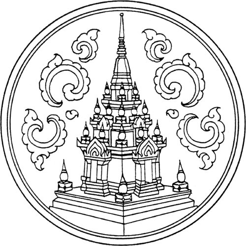
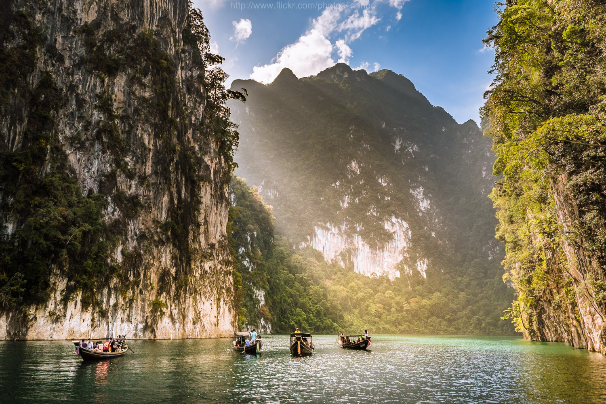
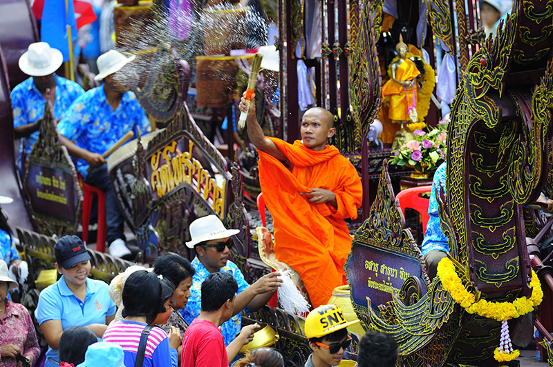
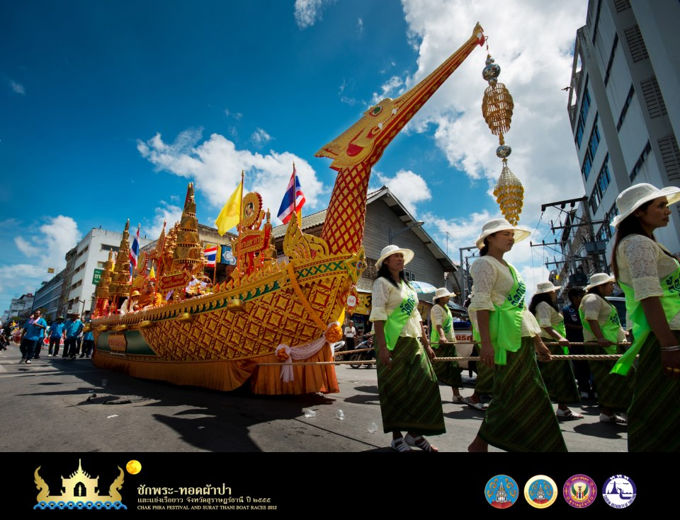
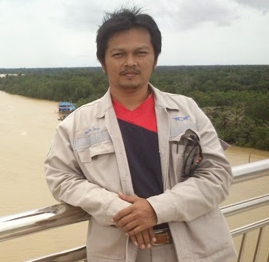

จังหวัดสุราฎร์ธานี

คำขวัญประจำจังหวัด
เมืองร้อยเกาะ เงาะอร่อยหอยใหญ่ ไข่แดง แหล่งธรรมะ
จังหวัดสุราษฎร์ธานี เป็นที่ตั้งของเมืองเก่า เป็นศูนย์กลางของเมืองศรีวิชัย มีหลักฐานแสดงถึงการตั้งรกรากและเส้นทางสายไหมในอดีต พื้นที่อำเภอเมืองสุราษฎร์ธานีเจริญขึ้นจนเป็นอาณาจักรศรีวิชัยในช่วงหลังพุทธศตวรรษที่ 13 โดยมีหลักฐานทางประวัติศาสตร์เป็นเครื่องยืนยันความรุ่งเรืองในอดีต ภายหลังยังเชื่อว่า เมื่ออาณาจักรตามพรลิงก์หรือเมืองนครศรีธรรมราชมีความรุ่งเรืองมากขึ้นนั้น เมืองไชยาก็เป็นหนึ่งในเมืองสิบสองนักษัตรของเมืองนครศรีธรรมราชด้วย ชื่อว่า "เมืองบันไทยสมอ"
ในรัชสมัยพระบาทสมเด็จพระนั่งเกล้าเจ้าอยู่หัวโปรดเกล้าฯ ให้ก่อตั้งอู่เรื่อพระที่นั่งและเรือรบเพื่อใช้ในราชการที่อ่าวบ้านดอน ต่อมาในรัชสมัยพระบาทสมเด็จพระจอมเกล้าเจ้าอยู่หัว ทรงให้ย้ายที่ตั้งเมืองท่าทองมายังอ่าวบ้านดอน (ซึ่งเป็นที่ตั้งของอำเภอเมืองสุราษฎร์ธานีในปัจจุบัน) พร้อมทั้งยกฐานะให้เป็นเมืองจัตวา ขึ้นตรงต่อกรุงเทพมหานคร และพระราชทานชื่อว่า "เมืองกาญจนดิษฐ์" โดยแต่งตั้งให้พระยากาญจนดิษฐ์บดีเป็นเจ้าเมืองดูแลการปกครอง
ในรัชสมัยพระบาทสมเด็จพระจุลจอมเกล้าเจ้าอยู่หัวได้โปรดเกล้าฯ ให้รวมเมืองกาญจนดิษฐ์ เมืองคีรีรัฐนิคม และเมืองไชยาเป็นเมืองเดียวกัน เรียกว่า "เมืองไชยา" ภายใต้สังกัดมณฑลชุมพร เมื่อเมืองขยายใหญ่ขึ้น จึงมีการปรับเปลี่ยนการปกครองและขยายเมืองออกไป มีการสร้างเมืองใหม่ขึ้นที่ อ่าวบ้านดอน ให้ชื่อเมืองใหม่ว่า อำเภอไชยา และให้ชื่อเมื่องเก่าว่า "อำเภอพุมเรียง" แต่เนื่องด้วยประชาชนยังติดเรียกชื่อเมืองเก่าว่า "อำเภอไชยา" ด้วยเหตุนี้ พระบาทสมเด็จพระมงกุฎเกล้าเจ้าอยู่หัว จึงพระราชทานนามเมืองใหม่ที่บ้านดอนว่า "สุราษฎร์ธานี" และให้ชื่อเมืองเก่าว่า "อำเภอไชยา" และพระราชทานนามแม่น้ำตาปี ให้ในคราวเดียวกันนั้นเอง ซึ่งเป็นการตั้งชื่อตามแบบเมืองและแม่น้ำในประเทศอินเดียที่มีแม่น้ำทัปตีไหลลงสู่ทะเลออกผ่านปากอ่าวที่เมืองสุรัต
เขาสก หรือ เขื่อนรัชชประภา (เขื่อนเชี่ยวหลาน)
เขาสก หรือ เขื่อนรัชชประภา (เขื่อนเชี่ยวหลาน) จังหวัดสุราฎร์ธานี ตั้งอยู่ในเขตอุทยานแห่งชาติเขาสก ลักษณะเป็นภูเขาหินปูน ยอดแหลม แนวหน้าผาสูงชัน กลางสายน้ำของเขื่อนเชียวหลาน บรรยากาศสวยงามจนได้รับสมญานามว่า "กุ้ยหลินเมืองไทย" ภาพภูเขารายล้อมเขื่อน นอนแพพายเรือคายัคและกิจกรรมต่างๆ รวมทั้งภาพไอหมอกกระทบกับแสงแดดลอยเหนือน้ำในยามเช้าเป็น ทัศนียภาพที่สวยงามดึงดูดใจและสร้างความประทับใจแก่นักท่องเที่ยวให้เดินทางมาที่นี่อย่างไม่ขาดสาย เขื่อนเชี่ยวหลานสามารถ ท่องเที่ยวได้ตลอดทั้งปี ซึ่งในแต่ละฤดูก็มีความสวยงามที่แตกต่างกันไป
ะมาณ 60 ก.ม.

อุทยานแห่งชาติเขาสก จะแบ่งจุดท่องเที่ยวออกเป็น 2 ส่วน คือ เขาสกส่วนของเขื่อนเชี่ยวหลานซึ่งนักท่องเที่ยวชม วิวทิวทัศน์ เหนือเขื่อน จากนั้น ลงเรือเพื่อไปนอนแพชมเขาสามเกลอ(ภูเขาหินกลางน้ำ) ซึ่งเรียกว่ากุ้ยหลินเมืองไทย เที่ยวถ้ำประการัง ถ้ำน้ำทะลุ กับ เขาสกส่วนที่เป็นที่ทำการอุทยานแห่งชาติเขาสกซึ่งเป็นจุดที่ไปชม น้ำตก เดินป่า และ ชมบัวผุด โดยทั้งสองที่อยู่ห่างกันประมาณ 60 กิโลเมตร
งานประเพณีชักพระ-ทอดผ้าป่า

งานประเพณีชักพระ-ทอดผ้าป่า จังหวัดสุราษฎร์ธานีงานประเพณีชักพระ-ทอดผ้าป่า จังหวัดสุราษฎร์ธานี เมื่อถึงวันออกพรรษาของทุกปี จังหวัดสุราษฎร์ธานีจะมีงานบุญที่สำคัญและยิ่งใหญ่ทรงคุณค่า คือ งานประเพณี ชักพระ ทอดผ้าป่า และแข่งเรือยาว
กิจกรรมสำคัญที่ไม่ควรพลาด คือ การชักพุ่มผ้าป่าหน้าบ้าน ในคืนวันขึ้น 15 ค่ำ เดือน 11 มีการตั้งพุ่มผ้าป่าหน้าบ้านกว่า 1,000 พุ่ม และพระสงฆ์จะทำการชักพุ่มผ้าป่าหน้าบ้านพร้อมกันทั่วเมืองในเช้าวันแรม 1 ค่ำ เดือน 11ซึ่งเป็นวันออกพรรษา
จากนั้นช่วงสายไปจนตลอดวัน ก็จะมีการชักพระทางบก หรือลากพระ การประกวดรถพนมพระ โดยมีรถพนมพระกว่า 100 วัด เข้าร่วมงาน นั่นคือที่มาของคำว่า " ไหว้พระร้อยวัด มหัศจรรย์วันเดียว"

งานประเพณีชักพระ-ทอดผ้าป่า จังหวัดสุราษฎร์ธานีงานประเพณีชักพระ-ทอดผ้าป่า จังหวัดสุราษฎร์ธานี เมื่อถึงวันออกพรรษาของทุกปี จังหวัดสุราษฎร์ธานีจะมีงานบุญที่สำคัญและยิ่งใหญ่ทรงคุณค่า คือ งานประเพณี ชักพระ ทอดผ้าป่า และแข่งเรือยาว
กิจกรรมสำคัญที่ไม่ควรพลาด คือ การชักพุ่มผ้าป่าหน้าบ้าน ในคืนวันขึ้น 15 ค่ำ เดือน 11 มีการตั้งพุ่มผ้าป่าหน้าบ้านกว่า 1,000 พุ่ม และพระสงฆ์จะทำการชักพุ่มผ้าป่าหน้าบ้านพร้อมกันทั่วเมืองในเช้าวันแรม 1 ค่ำ เดือน 11ซึ่งเป็นวันออกพรรษา
จากนั้นช่วงสายไปจนตลอดวัน ก็จะมีการชักพระทางบก หรือลากพระ การประกวดรถพนมพระ โดยมีรถพนมพระกว่า 100 วัด เข้าร่วมงาน นั่นคือที่มาของคำว่า " ไหว้พระร้อยวัด มหัศจรรย์วันเดียว"
ข้อมูลติดต่อ
ททท.สำนักงานสุราษฎร์ธานี
พื้นที่รับผิดชอบ : สุราษฎร์ธานี
ที่ตั้ง : 5 ถ.ตลาดใหม่ บ้านดอน อ.เมือง จ.สุราษฎร์ธานี 84000
โทรศัพท์ : 0 7728 8818-9
โทรสาร : 0 7728 2828
อีเมลล์ : tatsurat@tat.or.th
Website : http://www.tourismthailand.org/suratthani
สำนักงานอุทยานแห่งชาติ เขาสก (Khao Sok)
หมู่ที่ 6 ต.คลองศก อ.พนม จ.สุราษฏร์ธานี 84250
โทรศัพท์ : 0 7739 5139, 0 7739 5154-5 โทรสาร : 0 7739 5139, 0 7739 5154
อีเมล : khaosok_npks@hotmail.co.th
หัวหน้าอุทยานแห่งชาติ : นายวิโรจน์ โรจนจินดา
ข้อมูลผู้จัดทำ

นายพงษ์ชัย ชิณรา 5696007060